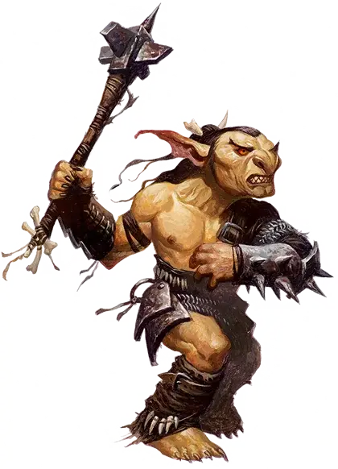

Гоблин
Goblin

Подземных жителей, гоблинов можно найти в каждом уголке мультивселенной, часто рядом со своими родственниками-багбирами и хобгоблинами. Задолго до того, как бог Маглубиет завоевал их, первые гоблины служили при дворе Королевы Воздуха и Тьмы, одного из главных магов Страны Фей. Гоблины процветали в её опасных владениях благодаря её особому дару — сверхъестественному умению находить слабые места у врагов крупнее их самих и выпутываться из неприятностей. Гоблины принесли этот волшебный дар с собой в миры по ту сторону Материального плана, даже если они не помнят Царство Фей, в котором они обитали до возвышения Маглубиета. Теперь многие гоблины следуют своей собственной судьбе, избегая заговоров как архифей, так и богов.
Особенности гоблина
Вы обладаете следующими особенностями.
Увеличение характеристик. Выберите одно из: (а) Значение одной характеристики по вашему выбору увеличивается на 2, а другой — на 1; (б) Значение трёх различных характеристик по вашему выбору увеличивается на 1.
Скорость. Ваша базовая скорость ходьбы — 30 футов.
Вид существа. Вы — Гуманоид. Вы также считаетесь гоблином для любого необходимого условия или эффекта, который требует, чтобы вы были гоблином.
Размер. Ваш размер — Маленький.
Тёмное зрение. На расстоянии 60 футов вы при тусклом освещении можете видеть так, как будто это яркое освещение, и в темноте так, как будто это тусклое освещение. В темноте вы не можете различать цвета, только оттенки серого.
Наследие фей. Вы с преимуществом совершаете спасброски для того чтобы избежать или окончить на себе состояние очарован.
Ярость мелкого. Когда вы наносите существу урон атакой или заклинанием, и размер существа больше чем ваш, вы можете использовать эту атаку или заклинание для нанесения существу дополнительного урона. Дополнительный урон равен вашему бонусу мастерства. Вы можете использовать эту особенность количество раз, равное вашему бонусу мастерства. Вы восстанавливаете все потраченные использования по окончании продолжительного отдыха и вы можете использовать её один раз за ход.
Шустрый побег. Вы можете совершать действия Отход или Засада бонусным действием в каждый ваш ход.
Языки. Ваш персонаж может говорить, читать и писать на Общем и еще одном языке, который по вашему мнению подходит для персонажа.